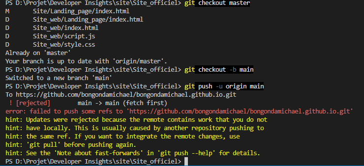

Un raccourci qui fonctionne aujourd'hui se paie plus tard
Petite confession : mon tout premier push sur GitHub, je l'ai fait sur une branche appelée master. Pas main, celle que tout le monde utilise aujourd'hui. Pourquoi ? Parce que c'est le nom par défaut dans VS Code, et que je n'avais aucune idée qu'il fallait s'en soucier.
Résultat : je bloquais sur comment gérer cette histoire de branches. Alors j'ai fait ce que beaucoup de devs débutants font sans le dire — j'ai contourné le problème. Direct sur l'interface web de GitHub, bouton "Upload files", je glisse mon index.html, je commit, et voilà. Le site est en ligne.
Ça a marché. Le site tourne, l'URL est propre (bongondamichael.github.io), tout fonctionne. Mais ce raccourci a un coût que je découvre maintenant : pas de git clone en local, donc pas de flux normal pour modifier le site plus tard. Chaque petit changement voudrait dire re-télécharger le fichier, l'éditer, et re-uploader à la main. Ça marche, mais ça ne scale pas.
La leçon, et c'est celle-là qui compte : un raccourci qui fonctionne aujourd'hui n'est pas gratuit. Il se paie plus tard, en friction. Ce n'est pas grave d'avoir bricolé pour lancer vite — c'est même souvent la bonne décision au bon moment. Mais il faut savoir revenir dessus une fois que le bricolage commence à coûter plus cher que la solution propre.
Ce que je fais maintenant : je clone le repo en local pour retrouver un vrai flux git add / commit / push. Plus besoin de repasser par l'upload web à chaque modification.
Prochain log : on attaque enfin le CSS — comment un logo devient une palette, une police, et quelques lignes de code qui font tenir tout le site debout.
